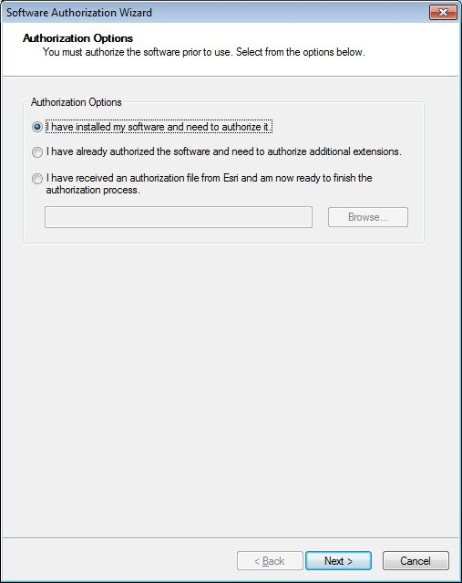
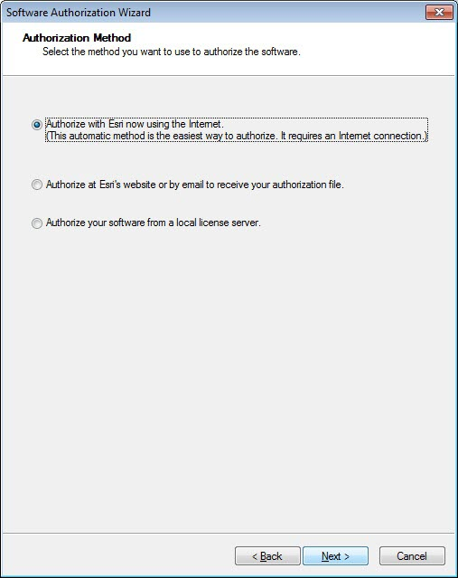

Authorizing your software
After the installation is complete, the ArcGIS Administrator Wizard is displayed. You can also start this wizard to select or change a product at a later time by selecting the ArcGIS Administrator from Start > All Programs > ArcGIS > ArcGIS Administrator.
The ArcGIS Administrator assists you in configuring ArcGIS Desktop. You will have two product types to select from: Concurrent Use or Single Use.
I
Concurrent Use
Concurrent Use products use a centrally or locally installed License Manager. Follow these setups to complete the Concurrent Use product authorization.
Step 1: Select one of the three Concurrent Use products.
Step 2: Define a license manager. The License Manager defined must be a 2019.2 or later License Manager. Once the License Manager is defined for Concurrent Use products, the applications are ready to use.
To install the License Manager and authorize it, see the License Manager Reference Guide.
Single Use
Single Use products require authorization on individual machines for use. You will need the authorization codes which can be found on MyEsri New customers will receive an email with the authorization codes. Existing customers can Log in with your Esri Global Account, and access the Licensing sub tab of the My Organizations tab.
For ArcGIS Desktop Single Use, the authorization code starts with the letters ESU or EVA, followed by nine numeric digits, for example, ESU123456789. Follow these steps to complete the Single Use product authorization. (Contact information can be found at http://www.esri.com/about-esri/contact.)
Step 1: Select one of the three Single Use products.
Step 2: Click Authorize Now to launch the Software Authorization Wizard. The wizard will walk you through the online or offline authorization process.
Online authorization
With online authorization, the Software Authorization Wizard connects directly to the Esri authorization site using secure sockets layer (SSL) from the deployed machine. Online authorization can be used if the machine on which the software has been installed is connected to the Internet. Online authorization can be performed by directly entering the authorization code in the Software Authorization Wizard or by creating a provisioning file (.prvc) at My Esri.
Offline authorization
Offline authorization is used if the machine where ArcGIS Desktop is installed does not have Internet connectivity. In this case, the authorization process creates a text file which can be uploaded to the Esri authorization server from an Internet-connected machine or can be sent in an email to Esri Customer Service to obtain an authorization response file (.respc). This authorization response file can be copied to the machine where ArcGIS Desktop is installed and used to authorize ArcGIS Desktop without a direct Internet connection.
Step 3: Upon opening the Software Authorization Wizard, you will be provided with three authorization options:

- I have installed my software and need to authorize it.
Select this option to proceed with the authorization process by entering the authorization code you received from Esri Customer Service.
- I have already authorized the software and need to authorize additional extensions.
This option is used if you have already authorized the core ArcGIS Desktop and now want to authorize any extensions. Authorizing additional extensions acquired after authorizing core ArcGIS Desktop can be done by starting ArcGIS Administrator from Start > All Programs > ArcGIS. Once in the ArcGIS Administrator utility, select the Desktop folder and select Authorize Now.
- I have received an authorization file from Esri and am now ready to finish the authorization process.
Select this option if you have a provisioning file created from the Esri Customer Care portal.
Select the appropriate option and click Next.
Step 4
Here you have the options to select online or offline methods of authorization, or authorize your Single Use product from a local license server.

Steps 5 and 6
Provide your contact information and details in the next two dialog boxes. If you are using a provisioning file (online authorization only), this information will be automatically populated from the file.
Step 7
Enter your ArcGIS Desktop authorization code starting with ESU or EVA, followed by the remaining nine digits.
Step 8
Next, you will have the option to authorize any extensions. If you choose to authorize any extensions, the Software Authorization Wizard will prompt you to enter the authorization codes for the extensions. If you choose not to authorize, the Software Authorization Wizard provides the option to evaluate any extension in the next step.
Step 9
In this step you may choose to evaluate any extensions for which you have not provided an authorization code in the previous step.
Online authorization
Use the online authorization and click Next to connect to the Esri Activation Site. Upon completion, you will receive a message that authorization is successful and the applications will be ready for use.
Offline authorization
The remaining steps are applicable only to offline authorization.
Step 10
You will be requested to save your authorization information to disk as a file named authorize.txt. You can then upload the authorization text file or send an email with the file attached.
If uploading the text file, an authorization response file will be generated to download.
When sending an email with the text file attached, you will receive a return email from Esri with the authorization response file.
After receiving the response file, start ArcGIS Administrator from Start > All Programs > ArcGIS to complete the authorization process.
Step 11
In the ArcGIS Administrator, click the Desktop folder, select the appropriate Single Use product, and click Authorize Now.
Step 12
Select I have received an authorization file from Esri and browse to the (*.respc) file. Click Next so the applications will be authorized and ready for use.